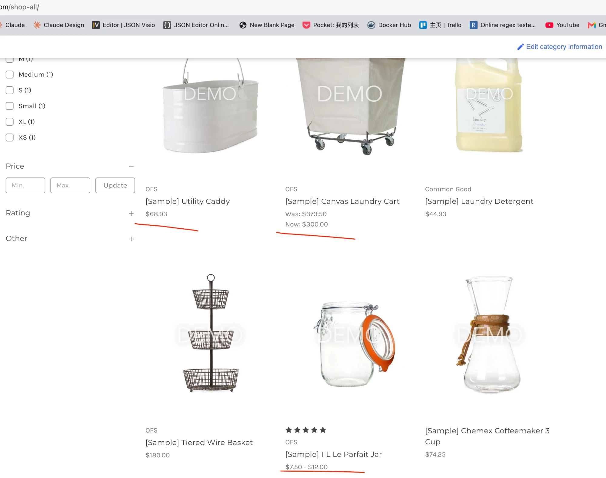
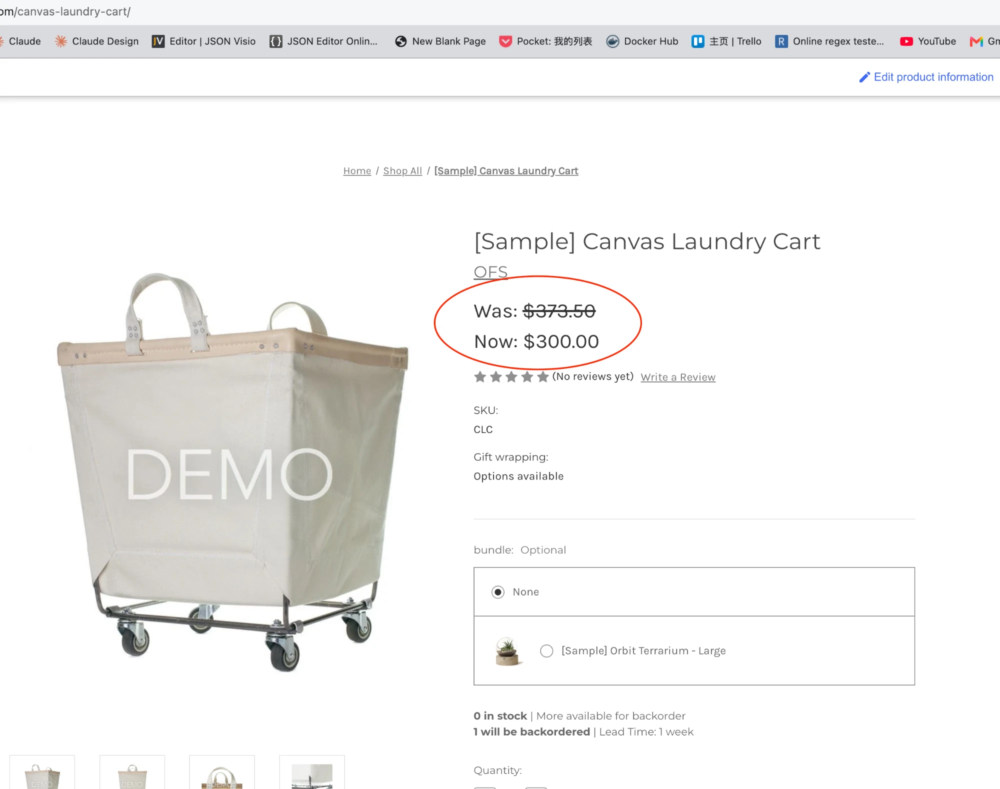

Understand Client Side
How each caller gets a price, and which of those paths reach the Pricing service. File references are repo: path. Samples are illustrative, built from the code and protos, not captured from a live store.
1. StorefrontGraphQL
Both Stencil pages (PLP and PDP) get prices by adding prices(...) to their product query. This section is what happens to that one field, from the resolver to the RPC.
Request chain for one Product.prices field. Loops every 8s.
Step by step
| # | Step | What happens | Code |
|---|---|---|---|
| 1 | Field | Product.prices(includeTax: Boolean = false, currencyCode). Variant.prices shares the same resolver base. | storefront: graphql/schema/catalog/product/ProductSchema.scala (productPricesField) |
| 2 | Resolve | Returns no prices if the product's price is hidden or showProductPrice is off. Otherwise defers to a batching Fetcher keyed by VariantProductId(productId, variantId, currencyCode, options). includeTax is not in the key, so a pricesWithTax and a pricesWithoutTax alias on the same node share one fetch. | graphql/resolvers/catalog/product/VariantPricesResolverSupport.scala |
| 3 | Batch | Groups the batched ids by currency and builds a VariantPricingRequest: store, channel, site, customer, customer group, items, requested currency, country, hidePriceFromGuests, client IP, store tier. | same file |
| 4 | Prepare | Resolves the active currency. Returns an empty response if the requested currency is not active, or if hidePriceFromGuests is on and the shopper is anonymous. Otherwise builds a ProductPricingRequest with the transactional currency's code, exchange rate and decimal places. | storefront: pageobjects/catalog/VariantPricingService.scala |
| 5 | Switch | Picks the implementation per request. See below. | storefront: bcapp/pricingapi/PricingClientDecorator.scala |
| 6 | Call | Sends ListEstimatedTaxProductPrices in batches. See the request below. | storefront: bcapp/pricingapi/ProductPricingGrpcClient.scala |
| 7 | Convert | Maps each ProductTaxPriceProto to a ProductPrice. An item whose calculated_price is empty becomes ProductPriceNotDefined, which produces no price. | bcapp/pricingapi/converters/PricingGrpcResponseConverter.scala |
| 8 | Shape | PricesWithTaxSetting(prices, includeTax) picks the inc-tax or ex-tax side for each GraphQL field. | graphql/schema/price/PriceSchema.scala |
The traffic switch: which implementation answers
PricingClientDecorator evaluates two LaunchDarkly flags per request, PAS-1243.pricing_api_traffic_switching and PAS-1243.pricing_api_traffic_switching_V2. The higher-privilege mode wins: enable (3), then compare_serve_pricing (2), compare (1), disable (0). Anything else counts as disable.
Price fields: GraphQL to gRPC
Each row is a field of the Prices type. includeTax picks the tax-inclusive or tax-exclusive side of the gRPC value.
| GraphQL field | gRPC field (ProductEstimatedTaxPricesProto) | Note |
|---|---|---|
price | calculated_price | The final selling price. Do not confuse with the gRPC price. |
basePrice | price | Regular price before sale |
salePrice | sale_price | Optional |
retailPrice | retail_price | Optional |
mapPrice | minimum_advertised_price | Optional |
saved | saved | Optional |
priceRange { min max } | price_range | Inc or ex side of minimum and maximum |
retailPriceRange | retail_price_range | Optional |
bulkPricing | bulk_tiers | Fixed, percentage or relative tiers |
The gRPC request storefront builds
The proto is interfaces: proto/bigcommerce/rpc/pricing/TaxPricingPrototype.proto. Storefront sets these fields:
| Field | Value |
|---|---|
store_id, channel_id, customer_group_id | From the request. The customer group defaults to 0. |
customer_id | Optional. Set only for logged-in shoppers. |
currency_code, exchange_rate, currency_decimal_precision | From the transactional currency |
country_code | Two letters, else UNKNOWN |
requested_items[] | product_id, optional variant_id, optional option_values[] |
enable_null_prices_in_response | Always true, because prices can be null for tax inc/ex price lists |
tax_display_as, include_calculation_data | Never set (unknown / false) |
Items are de-duplicated with .distinct, split by pricingApiRequestBatchSize, and sent with at most pricingApiConcurrentRequestLimit calls in flight. BigDecimal is {units, nanos}, so 18.5 is units: 18, nanos: 500000000.
Samples: product level and variant level
Each sample follows one price through four hops: the GraphQL request, the gRPC request, the gRPC response, and the GraphQL response. The values are illustrative: a US store that enters prices exclusive of tax at 10% tax, so every inclusive amount is the exclusive one times 1.1. Amounts in the gRPC JSON are written as decimal strings for readability. On the wire a BigDecimal is {units, nanos}.
Both pricesWithTax and pricesWithoutTax aliases are asked for, as the Stencil pages do. They share one gRPC item, because includeTax is not part of the request.
Product level: no variant selected
1. GraphQL requestquery {
site {
product(entityId: 112) {
entityId
pricesWithTax: prices(includeTax: true, currencyCode: USD) { ...Pricing }
pricesWithoutTax: prices(includeTax: false, currencyCode: USD) { ...Pricing }
}
}
}
fragment Pricing on Prices {
price { value currencyCode }
basePrice { value currencyCode }
salePrice { value currencyCode }
retailPrice { value currencyCode }
saved { value currencyCode }
priceRange { min { value currencyCode } max { value currencyCode } }
}
2. gRPC request: TaxPricingPrototype.ListEstimatedTaxProductPrices
{
"storeId": "1234567",
"requestedItems": [ { "productId": 112 } ], // no variantId, no optionValues
"currencyCode": "USD",
"customerGroupId": 0,
"channelId": "1",
"exchangeRate": { "value": { "units": "1", "nanos": 0 } },
"countryCode": "US",
"currencyDecimalPrecision": 2,
"enableNullPricesInResponse": true
}
3. gRPC response
{
"productPrices": [{
"productPriceRequestItem": { "productId": 112 },
"taxEnteredAs": "ENTERED_EXCLUSIVE",
"prices": {
"calculatedPrice": { "asEntered": "15.00", "taxInclusive": "16.50", "taxExclusive": "15.00" },
"price": { "asEntered": "20.00", "taxInclusive": "22.00", "taxExclusive": "20.00" },
"salePrice": { "asEntered": "15.00", "taxInclusive": "16.50", "taxExclusive": "15.00" },
"retailPrice": { "asEntered": "25.00", "taxInclusive": "27.50", "taxExclusive": "25.00" },
"priceRange": {
"minimum": { "asEntered": "15.00", "taxInclusive": "16.50", "taxExclusive": "15.00" },
"maximum": { "asEntered": "20.00", "taxInclusive": "22.00", "taxExclusive": "20.00" }
},
"saved": { "asEntered": "10.00", "taxInclusive": "11.00", "taxExclusive": "10.00" }
}
}]
}
4. GraphQL response
{
"data": { "site": { "product": {
"entityId": 112,
"pricesWithTax": {
"price": { "value": 16.5, "currencyCode": "USD" }, // calculatedPrice.taxInclusive
"basePrice": { "value": 22, "currencyCode": "USD" }, // price.taxInclusive
"salePrice": { "value": 16.5, "currencyCode": "USD" },
"retailPrice": { "value": 27.5, "currencyCode": "USD" },
"saved": { "value": 11, "currencyCode": "USD" },
"priceRange": { "min": { "value": 16.5, "currencyCode": "USD" }, "max": { "value": 22, "currencyCode": "USD" } }
},
"pricesWithoutTax": {
"price": { "value": 15, "currencyCode": "USD" }, // calculatedPrice.taxExclusive
"basePrice": { "value": 20, "currencyCode": "USD" },
"salePrice": { "value": 15, "currencyCode": "USD" },
"retailPrice": { "value": 25, "currencyCode": "USD" },
"saved": { "value": 10, "currencyCode": "USD" },
"priceRange": { "min": { "value": 15, "currencyCode": "USD" }, "max": { "value": 20, "currencyCode": "USD" } }
}
} } }
}
Variant level A: select the variant on product(...)
The Stencil PDP does this with sku or optionValueIds. product also accepts variantEntityId and useDefaultOptionSelections. priceRange is left out of this sample: it is in the real response, but I did not verify what the service returns for one fully selected variant.
query {
site {
product(entityId: 112, sku: "ABC-1") { # or optionValueIds: [{ optionEntityId: 5, valueEntityId: 10 }, ...], or variantEntityId: 321
entityId
pricesWithTax: prices(includeTax: true, currencyCode: USD) { ...VariantPricing }
pricesWithoutTax: prices(includeTax: false, currencyCode: USD) { ...VariantPricing }
}
}
}
fragment VariantPricing on Prices {
price { value currencyCode }
basePrice { value currencyCode }
salePrice { value currencyCode }
retailPrice { value currencyCode }
saved { value currencyCode }
}
2. gRPC request (only requestedItems differs from the product-level one)
"requestedItems": [{
"productId": 112,
"variantId": { "value": 321 },
"optionValues": [ { "optionId": 5, "valueId": 10 }, { "optionId": 6, "valueId": 20 } ]
}]
The variant and option values come from the catalog selected_options on the product node. I did not verify how catalog fills option_value_ids for a sku lookup, so treat the option values as expected rather than confirmed.
{
"productPrices": [{
"productPriceRequestItem": { "productId": 112, "variantId": { "value": 321 }, "optionValues": [ ... ] },
"taxEnteredAs": "ENTERED_EXCLUSIVE",
"prices": {
"calculatedPrice": { "asEntered": "18.00", "taxInclusive": "19.80", "taxExclusive": "18.00" },
"price": { "asEntered": "20.00", "taxInclusive": "22.00", "taxExclusive": "20.00" },
"salePrice": { "asEntered": "18.00", "taxInclusive": "19.80", "taxExclusive": "18.00" },
"retailPrice": { "asEntered": "25.00", "taxInclusive": "27.50", "taxExclusive": "25.00" },
"saved": { "asEntered": "7.00", "taxInclusive": "7.70", "taxExclusive": "7.00" }
}
}]
}
4. GraphQL response
{
"data": { "site": { "product": {
"entityId": 112,
"pricesWithTax": {
"price": { "value": 19.8, "currencyCode": "USD" },
"basePrice": { "value": 22, "currencyCode": "USD" },
"salePrice": { "value": 19.8, "currencyCode": "USD" },
"retailPrice": { "value": 27.5, "currencyCode": "USD" },
"saved": { "value": 7.7, "currencyCode": "USD" }
},
"pricesWithoutTax": {
"price": { "value": 18, "currencyCode": "USD" },
"basePrice": { "value": 20, "currencyCode": "USD" },
"salePrice": { "value": 18, "currencyCode": "USD" },
"retailPrice": { "value": 25, "currencyCode": "USD" },
"saved": { "value": 7, "currencyCode": "USD" }
}
} } }
}
Variant level B: variants { prices }
Variant.prices takes the same includeTax and currencyCode arguments and the same Fetcher. The Stencil PLP and PDP queries do not select it. It builds its key from the variant only, so the gRPC item has a variantId but no optionValues, and each variant is one item.
query {
site {
product(entityId: 112) {
variants(first: 2) {
edges { node {
entityId
sku
prices(includeTax: true, currencyCode: USD) {
price { value currencyCode }
basePrice { value currencyCode }
}
} }
}
}
}
}
2. gRPC request (requestedItems only)
"requestedItems": [
{ "productId": 112, "variantId": { "value": 321 } },
{ "productId": 112, "variantId": { "value": 322 } }
]
3. gRPC response (trimmed to the fields selected)
{
"productPrices": [
{ "productPriceRequestItem": { "productId": 112, "variantId": { "value": 321 } }, "taxEnteredAs": "ENTERED_EXCLUSIVE",
"prices": { "calculatedPrice": { "taxInclusive": "19.80", ... }, "price": { "taxInclusive": "22.00", ... }, ... } },
{ "productPriceRequestItem": { "productId": 112, "variantId": { "value": 322 } }, "taxEnteredAs": "ENTERED_EXCLUSIVE",
"prices": { "calculatedPrice": { "taxInclusive": "22.00", ... }, "price": { "taxInclusive": "22.00", ... }, ... } }
]
}
4. GraphQL response
{
"data": { "site": { "product": { "variants": { "edges": [
{ "node": { "entityId": 321, "sku": "ABC-1",
"prices": { "price": { "value": 19.8, "currencyCode": "USD" }, "basePrice": { "value": 22, "currencyCode": "USD" } } } },
{ "node": { "entityId": 322, "sku": "ABC-2",
"prices": { "price": { "value": 22, "currencyCode": "USD" }, "basePrice": { "value": 22, "currencyCode": "USD" } } } }
] } } } }
}
Other pricing call: FindAlternativePricing
For a shopper in a customer group, facet search (PLP) calls Pricing.FindAlternativePricing(storeId, customerGroupId, channelId) from shouldRemovePriceFilter, in FacetedSearchableResource. It goes through the same decorator, which always routes this one to gRPC. I only read the start of that function, so what it does with the answer is not covered here.
2. POST /remote/v1/product-attributes/{productId}
When the shopper picks an option on the PDP, the theme asks bcapp for the new state and redraws the price from the answer. This path does not use the ListEstimatedTaxProductPrices RPC from section 1.
One option change. Loops every 8s.
optionChange() on every option change/remote/* to bcappgetVariationdata.priceWhat triggers it
- Every option
changesends the serialized product form as aPOST, with the templateproducts/bulk-discount-ratesin thestencil-optionsheader. The response repaints the page (product-details.js:301). - Once on page load, with the initial selection. That callback updates stock and option state, and I found no price update in it (
product-details.js:88). - Editing options in the cart uses it too (
cart.js:177). Not investigated.
The first paint does not call this endpoint. It reads window.BCData.product_attributes, whose price is the same GraphQL price as product.price (section 4), and applies it with the same updateView. Storefront has no handler for the route: it falls into pathPrefix("remote" / Segment) in RemoteApiRouter.scala:133, is proxied to bcapp, and a requested template is rendered by storefront and returned as {"content": "...", "data": {...}}.
How bcapp builds the price
| Step | Done by |
|---|---|
| Cache lookup (below) | bcapp, Redis |
| Which price list applies to the customer group and channel | Pricing service, gRPC FindPriceListAssignment |
| That price list's prices | Pricing service, Price Lists RPC GetPriceRecordCollection |
| No price list for this shopper: catalog prices | bcapp, CatalogPricingService |
| Final price, bulk tiers, option-rule adjustments, rounding | bcapp, PHP |
| Tax inclusive and exclusive amounts | bcapp, PHP (PricingBasicTaxService) |
So the Pricing service answers "which list, and what is in it", and bcapp decides what to do with that and does the math. bcapp's only client of ListEstimatedTaxProductPrices is an admin debugging controller (NinjaPricingController). Source, repo bigcommerce: includes/resources/remote/v1/ProductAttributes.php, app/Pricing/Storefront/StorefrontPricingService.php, app/Pricing/PricingService.php, app/Pricing/SelectionPricingService.php.
How the displayed price changes
The theme only paints response.data.price (updateView, then updatePriceView, in product-details-base.js). It does no math: the text is the formatted strings from the response. Every price row is hidden first, then only the rows whose keys are in the response are shown. A sale or RRP row from before disappears if the new response leaves it out.
In response.data.price | On the page |
|---|---|
with_tax / without_tax | The price text. With price_range, it shows min - max instead. |
non_sale_price_with_tax / _without_tax | Shows the "Was" row and switches the label to "Now" |
rrp_with_tax / _without_tax | Shows the RRP row |
saved | Shows the "you save" row |
no price object | Every price row is hidden. bcapp leaves price out when a call-for-price message is set. When the price is null it also sets purchasable: false. |
The same response also drives the bulk pricing table (response.content), stock and messages, and the add-to-cart state.
Caches
| Layer | TTL | What it holds |
|---|---|---|
| Theme, browser, storefront proxy | none | A plain fetch POST: no cache option, no debounce. The router has no cache code; I did not read the proxy client. |
bcapp controller, flag STRF-8708.enable_redis_caching_for_remote_product_attributes | 20 s | The whole response, price included. Key on master: product, selected attributes, hide-rule flag. On for tier 3 stores only (science-values.php). |
bcapp guest price cache (ProductPriceCache) | 90 s by default | Guest shoppers only, per selected item, keyed by customer group, channel and currency. Selection-pricing path only. TTL is pricing.guest_pricing_cache_ttl. |
::cg, ::ch and ::cur to the key. Other shopper-specific values, such as the geo-IP tax zone, are still not in the key.Watch out
- Race. The option-change handler has no abort signal and no stale-response check, so with quick changes the last response to arrive wins. The page-load handler does have a guard.
- Failure. The handler does not check
err. If the request fails,response.datathrows aTypeErrorand the old price stays.
Read from source, not run against a store. The bcapp files were read from a local checkout on branch CHECKOUT-9770-3: the controller matches master, the app/Pricing files were not compared.
3. Stencil Storefront PLP
The data is category.products.*.price on a category page. Brand and search pages follow the same pattern with their own flags (pricesFromGqlForBrands, pricesFromGqlForSearch). I traced the category one.
What it looks like

/shop-all/) on a dev store. The three red underlines are the price shapes covered below.- [Sample] Utility Caddy,
$68.93. One price, printed fromprice.with_taxorprice.without_taxdepending on the tax display setting. The template prints whichever side exists, so I can't tell from the screenshot which one this is. - [Sample] Canvas Laundry Cart,
Was: $373.50andNow: $300.00.Wasisprice.non_sale_price_with_tax(the base price) andNowisprice.with_tax(the calculated price). The base price only shows because it is higher than the calculated price. - [Sample] 1 L Le Parfait Jar,
$7.50 - $12.00.price.price_range: the lowest and highest variant price, frommin.with_taxandmax.with_tax. This is the second sample output further down.
The card template templates/components/products/card.html in the Cornerstone theme renders components/products/price with price=price. If price.price_range exists and the theme setting price_ranges is on (it is true in config.json), it uses components/products/price-range instead. The Was and Now labels are theme settings with language fallbacks, so another theme or store can word them differently.
The flag
Set STRF-14727.Prices_from_gql_for_categories to enable. The flag is a string variation (enable or enabled turns it on), so a literal "true" would not count. Source: storefront: utils/ld/LDUtils.scala:68.
Flow
Loops every 8s.
price- Flag.
StencilResourceExperiments.fetchPricesFromGqlExperimentturns the flag intoExperimentEnabled.CategoryPageControllerpasses it down aspricesExperiment. - Query.
StencilCategoryContentQueryBuildersetsuseGQLPrices = true.replacePricesFragmentputs two aliased fields,pricesWithTaxandpricesWithoutTax, on each product node, unlessshowProductPriceis off or the shopper is a guest andhidePriceFromGuestsis on. The full query is below. It selects onlyvalueandcurrencyCode, with noformatted. - Execute. Section 1 runs per product and ends at the Pricing service.
- Decode.
CommonProductCardPageObjectDecoderrunsCommonPricePageObjectDecoderon each node. It buildsformattedwithPricingUtils.formatPrice, roundsvalue, and keeps only the tax sides the listTaxDisplayallows.tax_labelisdisplaySettings.taxLabel. - Encode.
CommonProductCardPageObjectEncoder.getPriceFieldwrites the decoded GraphQL price asprice.shouldHidePricechecks that same decoded price, so a card counts as priced from the price it shows.
All under storefront: stencil/pageobjects/... and pages/CategoryPageController.scala.
The query and the payload
With enable on, this is the shape of one category page query (facet search off). It is site, then category, then products, then an edges[].node per product. The price part is the two aliases. Source: stencil/pageobjects/category/services/query/builder/StencilCategoryContentQueryBuilder.scala and stencil/pageobjects/services/StencilProductsObjectQueryBuilderSupport.scala. Category ID, page size and the sort are made up.
query stencilCategoryContentResource {
site {
category(entityId: 24) {
path
defaultProductSort
products(first: 12, hideOutOfStock: false, sortBy: DEFAULT, useCategoryListingMode: true) { # plus priceFilter: { minPrice, maxPrice } when ?price_min / ?price_max are set
edges {
node {
entityId sku name path
plainTextDescription(characterLimit: 200)
createdAt { utc }
reviewSummary { averageRating numberOfReviews }
brand { name }
addToCartUrl
categories(first: 50) { edges { node { breadcrumbs(depth: 5) { edges { node { entityId name } } } } } }
isPriceHidden
# ---- the price part ----
pricesWithTax: prices(includeTax: true, currencyCode: USD) {
price { value currencyCode }
basePrice { value currencyCode }
salePrice { value currencyCode }
retailPrice { value currencyCode }
mapPrice { value currencyCode }
saved { value currencyCode }
priceRange { min { value currencyCode } max { value currencyCode } }
retailPriceRange { min { value currencyCode } max { value currencyCode } }
# bulkPricing { ... } is added only when frontMatter.global.bulkDiscountRates is on
}
pricesWithoutTax: prices(includeTax: false, currencyCode: USD) {
# same selection as pricesWithTax
}
defaultImage { url(width: 100, height: 100) altText }
images(first: 5) { edges { node { url(width: 100, height: 100) altText } } }
options { edges { node { entityId } } }
inventory { isInStock hasVariantInventory aggregated { availableToSell warningLevel } }
availabilityV2 { status description ... on ProductPreOrder { willBeReleasedAt { utc } } }
customFields { edges { node { entityId name value } } }
weight { value }
addToWishlistUrl
showCartAction
# featuredPromotions { ... } only when enabled
}
}
pageInfo { startCursor endCursor }
collectionInfo { totalItems }
}
}
}
}
With faceted search on, the same edges[].node selection sits under site { search { searchProducts(...) { products(first: ...) { ... } filters { ... } } } }, with category kept only for path and defaultProductSort. The decoder reads whichever cursor applies. Brand is shown as brand { name }; I did not copy the exact brand fragment.
{
"data": { "site": { "category": {
"path": "/shop-all/",
"defaultProductSort": "FEATURED",
"products": {
"edges": [{
"node": {
"entityId": 112,
"sku": "OCG",
"name": "[Sample] Oak Cheese Grater",
"isPriceHidden": false,
"pricesWithTax": {
"price": { "value": 16.5, "currencyCode": "USD" },
"basePrice": { "value": 22, "currencyCode": "USD" },
"salePrice": { "value": 16.5, "currencyCode": "USD" },
"retailPrice": { "value": 27.5, "currencyCode": "USD" },
"mapPrice": null,
"saved": { "value": 11, "currencyCode": "USD" },
"priceRange": { "min": { "value": 16.5, "currencyCode": "USD" }, "max": { "value": 22, "currencyCode": "USD" } },
"retailPriceRange": null
},
"pricesWithoutTax": { /* same fields, exclusive amounts: price 15, basePrice 20, salePrice 15, retailPrice 25, saved 10, range 15 to 20 */ }
/* ... */
}
}],
"pageInfo": { "startCursor": "YXJyYXljb25uZWN0aW9uOjA=", "endCursor": "YXJyYXljb25uZWN0aW9uOjEx" },
"collectionInfo": { "totalItems": 15 }
}
} } }
}
What the decoder and encoder make of that node: category.products[0].price (list tax display = inclusive)
"price": {
"with_tax": { "formatted": "$16.50", "value": 16.5, "currency": "USD" },
"non_sale_price_with_tax": { "formatted": "$22.00", "value": 22, "currency": "USD" },
"sale_price_with_tax": { "formatted": "$16.50", "value": 16.5, "currency": "USD" },
"rrp_with_tax": { "formatted": "$27.50", "value": 27.5, "currency": "USD" },
"saved": { "formatted": "$11.00", "value": 11, "currency": "USD" },
"price_range": {
"min": { "with_tax": { "formatted": "$16.50", "value": 16.5, "currency": "USD" }, "tax_label": "GST" },
"max": { "with_tax": { "formatted": "$22.00", "value": 22, "currency": "USD" }, "tax_label": "GST" }
},
"tax_label": "GST"
}
Why each key is there: basePrice 22 is above the price, and a sale price above 0 exists, so non_sale_price_with_tax shows. RRP 27.5 is above the price, so rrp_with_tax and saved show. mapPrice and retailPriceRange are null, so there is no map_price_with_tax or retail_price_range. The range ends differ, so price_range shows. without_tax is absent because the list setting is inclusive.
Where each price.* key comes from
Every *_with_tax key reads pricesWithTax.<field> and every *_without_tax key reads pricesWithoutTax.<field>. Both are the same gRPC value, taken from its inclusive or exclusive side.
| Stencil key | GraphQL field | gRPC field | Shown when |
|---|---|---|---|
with_tax / without_tax | price | calculated_price | Always, when the price is visible. The final selling price per unit. |
non_sale_price_with_tax / _without_tax | basePrice | price | Greater than price. With showStrikethroughWithSalePriceOnly, a sale price above 0 is also needed. |
sale_price_with_tax / _without_tax | salePrice | sale_price | Greater than 0 |
rrp_with_tax / _without_tax | retailPrice | retail_price | Greater than 0 and greater than price |
saved | saved | saved | Same gate as RRP, so they appear together |
map_price_with_tax / _without_tax | mapPrice | minimum_advertised_price | Greater than 0 |
price_range | priceRange { min max } | price_range | min < max on a tax side |
retail_price_range | retailPriceRange | retail_price_range | Same min < max rule |
tax_label | none | none | Always. From store config, not pricing. |
bulk_discount_rates comes from the same response (bulk_tiers) but sits beside price on the product. I did not trace how the encoder adds tax_label inside the price_range ends.
Two real outputs, explained
one price, no sale, no range"price": {
"with_tax": { "formatted": "$18.00", "value": 18, "currency": "USD" },
"tax_label": "GST"
}
A single price, so there is no price_range. No sale or RRP, so those keys are absent.
"price": {
"with_tax": { "formatted": "$7.50", "value": 7.5, "currency": "USD" },
"tax_label": "GST",
"rrp_with_tax": { "formatted": "$15.00", "value": 15, "currency": "USD" },
"saved": { "formatted": "$7.50", "value": 7.5, "currency": "USD" },
"price_range": {
"min": { "with_tax": { "formatted": "$7.50", "value": 7.5, "currency": "USD" }, "tax_label": "GST" },
"max": { "with_tax": { "formatted": "$12.00", "value": 12, "currency": "USD" }, "tax_label": "GST" }
}
}
with_tax is the lowest variant's calculated price. RRP $15.00 is above it, so rrp_with_tax and saved (15 - 7.5) both appear. The variants differ, so price_range appears.
When there is no price
- The product's price is hidden,
showProductPriceis off, orhidePriceFromGuestsapplies to a guest. - The
pricesfield came back empty for the product, for example when the service has no price for it (ProductPriceNotDefined). The decoder then yields noprice. - With no price the card also loses add-to-cart, pre-order, options and out-of-stock messaging, because they are derived from
isPriceHidden.
4. Stencil Storefront PDP
The data is product.price on a product page. The decoder and encoder are the same as the PLP, so the key table in section 3 applies. What differs is the flag, the query, how a selected variant is priced, and tax display.
What it looks like

/canvas-laundry-cart/) for the same product as the Was and Now card above.Was: $373.50 is product.price.non_sale_price_with_tax and Now: $300.00 is product.price.with_tax, the same two keys as on the card. The detail page renders product.price through the same components/products/price partial (product-view.html passes price=product.price). It also prints a "you save" line from price.saved, and an RRP row from price.rrp_with_tax. Neither appears in the screenshot, and the template hides each row when its key is absent.
Part 1: Page load
The browser makes one page request, for example GET /product/?sku=ABC-1. While rendering it, the storefront service builds the stencilProductDetailsResource query and runs it with GraphQLService.execute against its own Storefront GraphQL schema. There is no extra HTTP call. Everything in this part happens inside that one query.
The flag and its gating
Set STRF-14355.Migrate_price_data_to_gql_for_product_details (priceDataFromGQLInProductDetails) to enable. Like the PLP flag it is a string variation. With it on, the encoder writes price (and bulk_discount_rates, can_purchase, cart_url, show_quantity_input, cart_order_source) from the GraphQL result. Prices are included in the query only when showProductPrice is on for this shopper.
The query
Built in storefront: stencil/pageobjects/productdetails/service/StencilProductDetailsQueryBuilder.scala. Three aliases select the same Product type. Most selections are trimmed here.
query stencilProductDetailsResource {
site {
# only when the URL has ?sku= or ?attributes=
productVariant: product(entityId: 112, sku: "ABC-1") { ...ProductFields }
# always
defaultSelectionProduct: product(entityId: 112 useDefaultOptionSelections: true) { ...ProductFields }
baseProduct: product(entityId: 112 useDefaultOptionSelections: false) { ...ProductFields }
}
}
fragment ProductFields on Product {
entityId name sku ...
# price part, only when prices are included
pricesWithoutTax: prices(includeTax: false, currencyCode: USD) { ... Pricing }
pricesWithTax: prices(includeTax: true, currencyCode: USD) { ... Pricing }
...
}
fragment Pricing on Prices {
price {value currencyCode} basePrice {...} salePrice {...} retailPrice {...} mapPrice {...} saved {...}
priceRange { min {...} max {...} } retailPriceRange { min {...} max {...} }
bulkPricing { __typename minimumQuantity maximumQuantity ... }
}
With ?sku= and ?attributes= both present, only sku is used. There is no variants { prices } selection: a variant price comes from the prices field of a product(...) alias that carries a selection.
How a variant selection reaches the Pricing service
The page URL decides what goes into the query above:
| URL parameter | Read by | Effect on the query |
|---|---|---|
?sku=ABC-1 | SkuRequestParamExtractor | Adds productVariant: product(entityId: 112, sku: "ABC-1") |
?attributes=<base64url> | OptionPrefilledValuesExtractor | The value is a base64url-encoded JSON object keyed by option ID. Its option-to-value ID pairs become optionValueIds: [{ optionEntityId, valueEntityId }, ...] on productVariant. I did not read how non-multiple-choice values are handled. |
| neither | none | No productVariant alias. defaultSelectionProduct and baseProduct are still queried. |
From there:
- The
productresolver passesvariantEntityId,optionValueIds,skuanduseDefaultOptionSelectionsto the catalog fetch. The PDP query uses onlysku,optionValueIdsanduseDefaultOptionSelections. - Catalog returns
selected_options:option_value_ids[]and an optionalvariant_id. The proto says it is empty when there is no overlay. - That becomes
VariantSelectedOptionson the product.ProductPricesResolverbuilds the Fetcher key from it, so the gRPC item carries the variant and option values. - The Fetcher batches the items into one
ListEstimatedTaxProductPricescall (section 1). The prices are decoded intoproduct.priceand intoBCData.product_attributes.price(section 2).
Pick the URL to see which items reach requested_items in a single ListEstimatedTaxProductPrices call (section 1). The IDs are made up.
Which price product.price uses
The decoder reads each alias with the same price decoder, then resolveVariantValue prefers the selected variant's price and falls back to the base product's. The variant used is productVariant.filter(isVariant).orElse(defaultSelectionProduct), where isVariant needs at least one selected variant-option value.
| Request | product.price comes from |
|---|---|
?sku= or ?attributes= selecting a variant | productVariant.prices, a specific variant in the gRPC item |
| No params, merchant default option selections | defaultSelectionProduct.prices, if isVariant holds |
| No params, no defaults | baseProduct.prices: the product-level price and range |
If the chosen variant has no price, the decoder falls back to the base price without any error.
How the PDP differs from the PLP
| PLP | PDP | |
|---|---|---|
| Flag | STRF-14727.Prices_from_gql_for_categories | STRF-14355.Migrate_price_data_to_gql_for_product_details |
| Extra gating | none | productDetailsResource experiment on, and showProductPrice on |
| Tax display | List setting, applied while decoding | Decoded with Both, then applyTaxDisplaySettings(detail) strips the unused side when encoding |
| Price source per product | One product-level price per card | Selected variant, else default selection, else base product |
StencilProductDetailsPOWithPricesV3 plus the currency and the customer ID. I did not check whether the customer group is part of the key. Source: storefront: cache/CacheUtils.scala around line 741.selected_options.variant_id for a ?sku= lookup versus a full option match, and whether the three aliases always land in one Fetcher batch. They resolve in the same GraphQL execution, so I expect one batch, but I did not confirm Sangria's timing.Part 2: After load (option change)
When the shopper changes an option on the page, the theme calls POST /remote/v1/product-attributes/{productId}. The storefront service proxies that call to bcapp. Section 2 covers the call itself. Compared with part 1:
- What triggers it. The theme in the browser: once on page load, and on every option change.
- Who makes the call. The browser. The storefront service only proxies it to bcapp.
- Which API. The remote API, with the serialized product form as the body. It is not GraphQL: the Cornerstone theme (
assets/js) contains no GraphQL calls, so after load its browser code never asks Storefront GraphQL for a variant price. Other themes could differ; I only read Cornerstone. - Who prices it. bcapp, not
ListEstimatedTaxProductPrices. It asks the Pricing service only for the price list and its records, then calculates the price and tax itself. See section 2. - Where the result lands.
response.data, applied byupdateView. The option-change call also asks for theproducts/bulk-discount-ratestemplate, soresponse.contentis rendered too.
So the selection in the URL when the page is rendered is priced through GraphQL (part 1). A selection the shopper makes afterwards is priced through this call.
5. Cart / Checkout (includes Manual Order) WIP
CartProjectionService::applyPrices. Taxes, discounts, shipping and promotions that run afterwards are out of scope. Manual Order is not traced.Every time bcapp builds a cart that has items, it asks the pricing code for the price of each line and writes the answer onto the cart items. Two experiments decide where that price comes from. This section follows the path for each.
Entry point
CartProjectionService::build()andfindById()load the cart, then callapplyPricingAndVariantData()if it has items (CartProjectionService.php:146).CheckoutServicecalls the same method after it changes a checkout (lines 997, 1187, 1254, 1270).- That method runs
applyPrices()first. Totals, item-level manual discounts, cart discounts and variant data come after it, so every later step starts from the prices set here. applyPrices()callsPriceAssignmentService::hydrate(currencyCode, customerGroupId, items, channelId). Items are the cart items that need a price: custom products, gift certificates and items with a custom price are skipped (ItemsCollection::getItemsThatNeedPrice).
The two flags
| Experiment | Off | On |
|---|---|---|
PROJECT-5992.Feature_price_lists_tax_inclusive_exclusive | Legacy path. getSelectionPriceCollection, no price list tax setting, hydrate() returns null. Cart tax setting comes from the store. | Price list tax inc/ex is honoured. hydrate() returns a HydratePriceResult. Then the flag below decides the source. |
PROJECT-8948.hydrate_cart_prices_from_pricing_service | bcapp prices it. getSelectionPriceCollectionWithTaxEnteredAs, in PHP, with two RPCs to the Pricing service for the price list. | Pricing service prices it. One GetCartPricing RPC. |
The second flag is only read when the first is on. The code comment warns not to enable it before cart pricing phase 2 (PROJECT-8947) is finished. Both are LaunchDarkly boolean experiments, read per store on every hydrate().
PROJECT-8948.compare_cart_prices_from_pricing_service. The checkout I read (branch CHECKOUT-9770-3; the string is also absent from origin/master) has only hydrate_cart_prices_from_pricing_service (PricingExperiments.php:15), and it switches the source, with no compare mode. If a compare flag exists, it is on a branch I have not seen. This page follows the flag I found.Process: flag off and flag on
Both diagrams assume PROJECT-5992 is on. Solid arrows are calls, dashed are responses.
Mermaid source for the two diagrams
sequenceDiagram participant Cart as Cart projection participant BP as BCApp Pricing participant BC as BCApp Catalog participant PR as Pricing RPC Cart->>BP: hydrate(currency, group, items, channel) BP->>PR: FindPriceListAssignment (cached) PR-->>BP: price list ID + tax entered as BP->>PR: ListPriceRecordsAllowStaleNoCount PR-->>BP: price records + bulk tiers BP->>BC: getPricesBatch (no list, or list is "use global") BC-->>BP: catalog prices BP->>BP: bulk tier, option rules, bundled products BP-->>Cart: selection prices + tax inc/ex flag Cart->>Cart: setBasePrice, setItemPrice, remove unpriced items sequenceDiagram participant Cart as Cart projection participant PC as BCApp Pricing client participant PR as Pricing RPC participant CR as Catalog RPC Cart->>PC: hydrate(currency, group, items, channel) PC->>PR: GetCartPricing PR->>CR: ListCatalogPrices (all items) CR-->>PR: catalog prices PR->>PR: mode, price list records, tier, rules, discounts PR-->>PC: per-item price + prices_entered_tax_inclusive PC-->>Cart: selection prices + tax inc/ex flag Cart->>Cart: setBasePrice, setItemPrice, remove unpriced items
Services and functions called
Flag off: bcapp prices it
| Function | Input | Output |
|---|---|---|
PriceAssignmentService::hydratethen createPriceCollectionRequest | currency code, customer group ID, items, channel ID | SelectionPriceCollectionRequest: per item product ID, variant ID, quantity, selected options, line item ID as reference, combination ID |
PricingService::getSelectionPriceCollectionWithTaxEnteredAsto SelectionPricingService::getPriceCollectionWithPriceListTaxEnteredAs | that request | SelectionPriceWithPriceListTaxEnteredAs: a list of SelectionPriceWithNullablePrices (null when no price) and pricesEnteredTaxInclusive |
PriceListAssignmentService::findPriceListAssignmentgRPC FindPriceListAssignment | customer group ID, channel ID | PriceListAssignment: price list ID and tax entered as (inclusive, exclusive, use global). Empty if the PriceLists feature is off. Cached. |
PriceListClient::getPriceRecordCollectiongRPC ListPriceRecordsAllowStaleNoCount | price list ID, variant IDs, currency, bulk tier expander | PriceRecord[] with prices and bulk tiers. Read from a read-only database that may be slightly stale. |
CatalogPricingService::getPricesBatch | catalog price requests (product, variant, options) | catalog prices, converted to the cart currency and rounded |
SelectionPricingService::calculatePrice | one price record, the request, bundled prices, currency | SelectionPrice: record price, then bulk tier for the quantity, option rules, bundled product prices |
Flag on: Pricing service prices it
| Function | Input | Output |
|---|---|---|
CartPricingGrpcMapper::createCartPriceRequest | same four arguments as hydrate | CartPriceRequest: per item line item ID, product ID, variant ID, quantity, selected options, combination ID |
CartPricingServiceClient::getCartPricinggRPC GetCartPricing, with a timeout | GetCartPricingReqProto: store_id, currency_code, customer_group_id, channel_id, request_items[] (cart_item_id, product_id, optional variant_id, quantity, optional product_attribute_combination_id, selected_options[]) | GetCartPricingRespProto: selection_prices[] and prices_entered_tax_inclusive. Mapped by convertCartResponse to the same SelectionPriceWithPriceListTaxEnteredAs as the flag-off path. |
Inside the service: CartPricingService.buildPrices | cart pricing context and request items | Per item: price, calculated_price, sale_price, retail_price, map_price, applied bulk tier. Price is absent when the item has none. Steps: catalog data, pricing mode, discounts, price list records, adjustments. See the Pricing service page. |
A PricingServiceException from either path is not caught in applyPrices, so a failed price call fails the cart build. The mapper turns a null price in the response into a null selection price, which the next section treats as "no price".
What changes on the cart
PriceAssignmentService applies the result the same way on both paths, one price per item matched by line item ID.
| Result for an item | Effect |
|---|---|
| Has a price | setBasePrice(calculatedPrice, false, false): basePrice is set, isCustomPrice stays false, and cached totals on the item are invalidated.setItemPrice(Price): price, calculatedPrice (null becomes 0.0), salePrice, retailPrice, minimumAdvertisedPrice, and bulkPricing (min and max quantity, amount, tier type) when a tier applies. |
No price (null), or calculatedPrice < 0 | $cart->removeItem($item->getId()). The item disappears silently instead of raising an error, as it does when a product stops being purchasable. Only when PROJECT-5992 is on. |
| Not sent to pricing | Custom products, gift certificates and custom-price items keep the price they already have. |
| The cart | setPricesEnteredTaxInclusive(...): the price list's tax setting, or the store setting if the list is use global. With PROJECT-5992 off, the store setting is used and set right after hydration, because the totals estimate reads it. |
| What happens next | Totals, manual discounts, cart discounts and variant data use these prices. After the projection is built, estimateAndApplyTaxes runs. The projection is stored with base_price, custom_price and the item_price block (CartProjectionCatalogItemTransformer). |
| Telemetry | Span annotation price_source: bc_pricing_legacy, bc_pricing_tax_entered_as or pricing_service. A log line when hydration takes over 800 ms. A statsd timing keyed by PriceLists or Catalog. |
PriceAssignmentServiceCartPricingTest covers the flag-on mapping only. The add-to-cart hop from Storefront, Manual Order, and where GetCartPricing is called from outside bcapp are not traced. The Pricing service side was read from the pricing repo, not run.Source, repo bigcommerce: app/Checkout/Cart/CartProjectionService.php, app/Checkout/Cart/Catalog/PriceAssignmentService.php, app/Pricing/{PricingService,SelectionPricingService,CartPricingServiceClient,CartPricingGrpcMapper,PriceListAssignmentService,CatalogPricingService}.php, lib/gRPC/PriceListClient.php, config/Experiments/PricingExperiments.php. Repo pricing: CartPricingService.scala, CartCatalogServiceClient.scala.
6. Order WIP
WIP